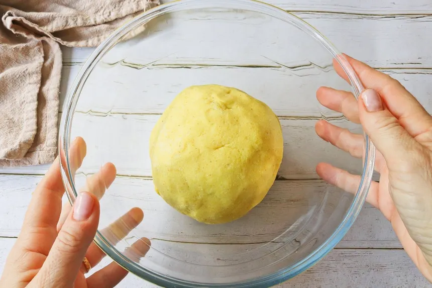
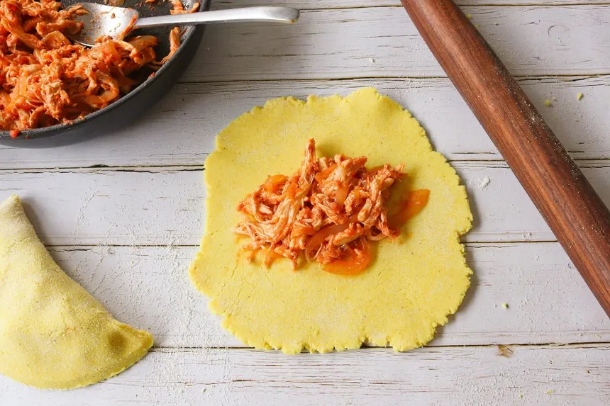
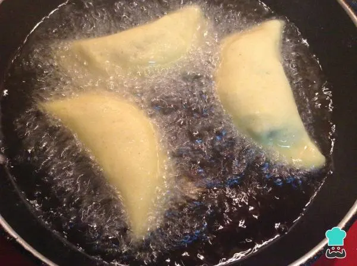
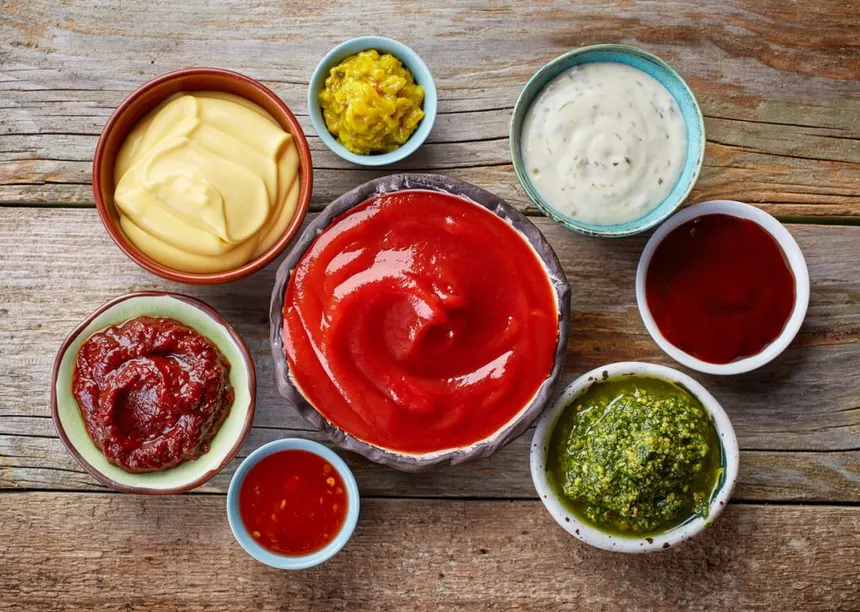

Empenadas Venezolanas
Inicio
Ingredientes para la preparacion de las Empanadas:
1. Para la masa:

- Harina de maíz precocida (tipo Harina P.A.N.).
- Agua (preferiblemente tibia).
- Sal al gusto.
- Azúcar o papelón (una pizca para dar el toque dulzón característico).
- Colorante u onoto (opcional, para dar el color dorado intenso).
2. el relleno (opciones comunes):

- Queso blanco duro rallado.
- Carne mechada (carne de res deshebrada y guisada).
- Cazón o pescado blanco guisado.
- Caraotas negras (frijoles negros), a veces acompañadas con queso (empanada "Dominó").
- Pollo mechado y guisado.
3. Para la cocción y preparación:

- Aceite vegetal abundante para freír.
- Papel absorbente para retirar el exceso de grasa.
- Una bolsa plástica limpia (esencial para extender la masa y darle forma de media luna).
4. Sugerencia de acompañantes:

- Guasacaca (salsa a base de aguacate).
- Salsa de ajo.
- Picante al gusto.